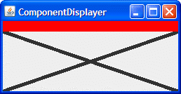

Exercise 1. Using a standard border and custom component painting, implement a component that has a preferred size of 250x100, is opaque by default, has a 5-pixel black border, and paints an “X” (using 5-pixel-thick lines) in the foreground color, as shown in the following figure.

Answer 1: See XMarksTheSpot.java,
which you can run using ComponentDisplayer.java.
Here's the code that sets the border of the XMarksTheSpot component:
setBorder(BorderFactory.createMatteBorder(5,5,5,5, Color.BLACK));
Here's the X-drawing code from the paintComponent method of XMarksTheSpot:
Graphics2D g2 = (Graphics2D)g;
Insets insets = getInsets();
g2.setStroke(new BasicStroke(5.0f));
g2.draw(new Line2D.Double(insets.left,
insets.top,
getWidth() - insets.right,
getHeight() - insets.bottom));
g2.draw(new Line2D.Double(insets.left,
getHeight() - insets.bottom,
getWidth() - insets.right,
insets.top));
Exercise 2. Implement an icon that’s 10x10
pixels and paints a solid rectangle that fills the 10x10 area. If the icon’s
component is enabled, the rectangle should be red; if disabled, gray. Make
a copy of ButtonDemo.java that uses your custom Icon
for the middle button, instead of displaying middle.gif. The
following pictures show what the icon should look like.
Answer 2: See SquareIcon.java,
which you can run using this modified ButtonDemo.java.
Here's the code that sets the icon:
Icon middleButtonIcon = new SquareIcon();
...
b2 = new JButton("Middle button", middleButtonIcon);
Here is SquareIcon's implementation of the three methods required
by the Icon
interface:
Exercise 3. Implement a border that paints a red 15-pixel-tall stripe all the way across the top of its component. Test this border by substituting it for the border on the component you created in exercise 1. The result should look like the following figure.
Answer 3: See
StripeBorder.java,
which you can run using ComponentDisplayer.java
and XMarksTheSpot.java (be sure
to uncomment the line that sets the border to StripeBorder). Here
is StripeBorder's implementation of the three methods required
by the Border
interface:
public void paintBorder(Component c, Graphics g,
int x, int y,
int width, int height) {
g.setColor(Color.RED);
g.fillRect(x, y, c.getWidth(), HEIGHT);
}
public Insets getBorderInsets(Component c) {
return new Insets(HEIGHT, 0, 0, 0);
}
public boolean isBorderOpaque() {
return true;
}